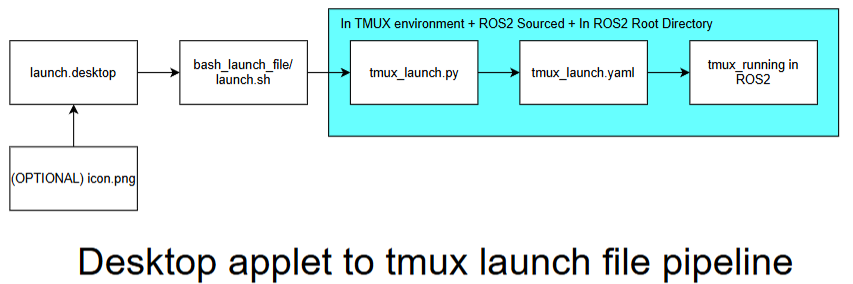

Writing Launch Files
To ensure all ROS nodes can be initialised quickly between experiments, launch files are used. The method to launch ROS nodes can vary greatly as different methods can offer their own distinct advantage. The Robotino is set up in a way which allows tmux to launch different panels, improving the interpretability of what is happening during a run.
ROS also offers their own version of launch files, which are also used in this PC. It is possible to combine multiple nodes in one launch file, although the drawback is that it makes debugging difficult. One node can crash randomly and it will subsequently terminate all other nodes from launching. This way of setting up launch files is tedious. Unless you are working with extensively tested ROS drivers/nodes, there will be no way to test each node individually.
Therefore, tmux is used (Terminal Multiplexer). It is able to create multiple panels at a time, with each running a ROS node individually. By combining the streamlined launch files from ROS2 and custom launch files written to interface with tmux, we are able to take advantage of the strengths of both approaches.
Use tmux for a ROS node which you have separately developed or wish to run individually. For industry grade software (tested), it is more sound to launch all of their relevant nodes in a tmux window and treat the whole launch as one node.
This link guides you through different ways nodes can be written in ROS2 so that launch files can launch nodes and other launch files:
https://robotics.stackexchange.com/questions/89429/ros2-include-a-launch-file-from-a-launch-file
Desktop Applet to TMUX Launch File Pipeline
The diagram below illustrates the full pipeline from a desktop shortcut through to tmux running in ROS2. Each block in the pipeline is covered in its own subsection below.
{kind=link}

.desktop (Desktop Front End)
The .desktop file is a Linux desktop entry that acts as a clickable shortcut on the
Ubuntu desktop. It tells the OS what script to run when the icon is double-clicked, allowing
anyone to launch the full ROS2 stack without opening a terminal manually.
An example .desktop file is shown below:
[Desktop Entry]
Name=Robotino Controller
Exec=/home/robotino/Desktop/bash_launch_files/robotino_controller.sh
Type=Application
Terminal=true
Icon=/home/robotino/Pictures/Icons/Controller.png
bash_launch_file / launch.sh (Desktop Launch Backend)
The launch.sh bash script is called by the .desktop file. Its job is to set up the
environment before handing off to the Python tmux launcher, this will include navigating to the
correct directory, sourcing ROS2, and opening a tmux session.
An example launch.sh is shown below:
#!/usr/bin/env bash
# Check if tmux session exists
if ! tmux has-session -t roboros 2>/dev/null; then
echo "Creating tmux session 'roboros'"
tmux new-session -d -s roboros
fi
# Send the commands to the tmux session
tmux send-keys -t roboros "cd ~/ros_ws/tmux_launch_files/robotino-controller" C-m
tmux send-keys -t roboros "python3 tmux_yaml.py" C-m
# Attach to the session
tmux attach -t roboros
tmux_launch.py (Tmux Bash Frontend Functions)
The Python launch script reads the YAML configuration file and programmatically constructs the tmux session by creating windows, splitting panes, and sending the appropriate ROS2 commands to each pane.
An example tmux_launch.py is shown below:
import yaml
import subprocess
import os
# Loading the config file
def load_config(path):
with open(path, 'r') as f:
return yaml.safe_load(f)
# Shortform to discretise subprocess outputs
def run_cmd(cmd):
subprocess.run(cmd, shell=True)
a
# Send a command to a certain pane
def send_command_to_pane(pane_id, command):
full_cmd = f"tmux send-keys -t {pane_id} \"bash -i -c \\\"{command}\\\"\" C-m"
run_cmd(full_cmd)
# Send a command to a certain pane
def setup_send_command_to_pane(pane_id, command):
full_cmd = f"tmux send-keys -t {pane_id} \"{command}\" Enter"
run_cmd(full_cmd)
# Reset all pane layouts to cater specifically to SLAM
def setup_layout():
# Initial pane is 0
run_cmd("tmux kill-pane -a") # kill all other panes
run_cmd("tmux split-window -h && tmux split-window -v") # split right and vertically
run_cmd("tmux select-pane -L && tmux split-window -v") # split left vertically
run_cmd("tmux rename-window Robotino_Controller")
run_cmd("tmux select-layout tiled") # make clean layout
# Loading all of my ROS_Node Subsystems
def load_subsystems(panes,id):
# Send commands
for i, pane in enumerate(panes):
if id == 1:
send_command_to_pane(i, pane['command'])
else:
setup_send_command_to_pane(i, pane['command'])
# Gets the ids of all of the panes
def get_pane_ids():
result = subprocess.check_output("tmux list-panes -F '#{pane_id}'", shell=True)
return result.decode().splitlines()
# Gets the ids of the active pane
def get_active_pane_id():
result = subprocess.check_output("tmux display-message -p '#{pane_id}'", shell=True)
return result.decode().strip()
# Sends the command to all but the active terminal
def source_ros_and_ads_ws(sources):
load_subsystems(sources,0)
if __name__ == "__main__":
config = load_config("tmux_commands.yaml")
setup_layout()
print(config)
source_ros_and_ads_ws(config['sources'])
load_subsystems(config['panes'],1)
tmux_launch.yaml (Tmux Bash Backend)
The YAML configuration file defines the structure of the tmux session in a human-readable format. Keeping this separate from the Python script means you can change what runs without touching any code.
An example tmux_launch.yaml is shown below:
sources:
# SOURCE Commands
- command: "cd ~/ros_ws && clear && source install/setup.bash"
- command: "cd ~/ros_ws && clear && source install/setup.bash"
- command: "cd ~/ros_ws && clear && source install/setup.bash"
- command: "cd ~/ros_ws && clear && source install/setup.bash"
panes:
# RUN Commands
- command: "ros2 run joy joy_node"
- command: "ros2 launch rto_bringup rto_bringup_launch.py"
- command: "ros2 launch teleop_twist_joy teleop-launch.py"
- command: "ros2 launch realsense2_camera rs_launch.py"